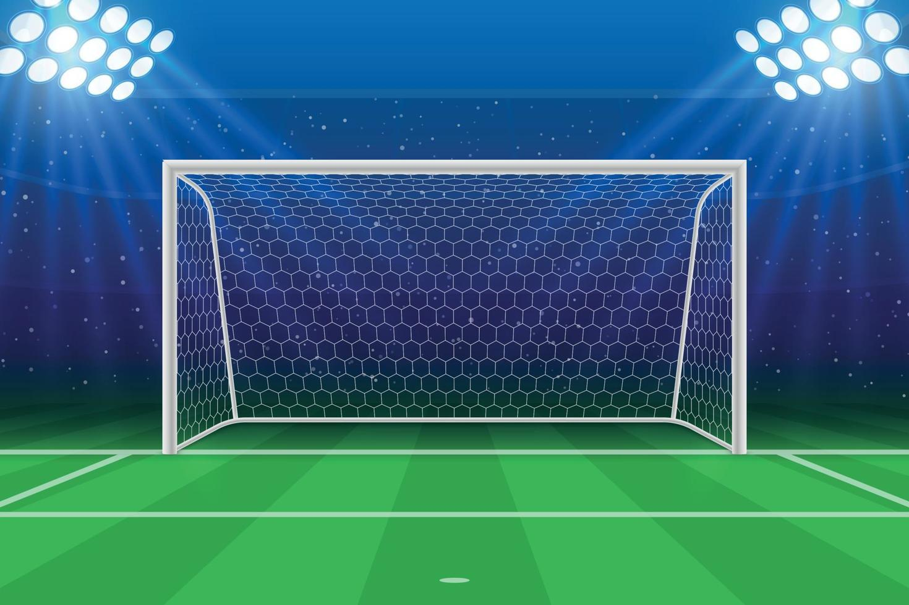

The first documented form of football : known as cuju, originated in China during the Han dynasty (206 BC to 220 AD).
However, the modern version of football, or association football, emerged in England in the mid-19th century
with the formation of the Football Association in 1863 and the codification of its rules
Parallel versions : of ball-kicking games existed in other parts of the world:
Kemari in Japan (as early as the 7th century AD), a non-competitive game emphasizing skill and elegance.
Episkyros in ancient Greece, and later Harpastum in ancient Rome, involved more physical contact and may have influenced European medieval games.
Indigenous cultures in the Americas, such as the Maya and Aztec civilizations, also played ball games, although many of these had religious or ritual significance and were not direct predecessors to modern football.
The start of modern football
First official matches : Clubs began playing under the FA rules. The first official international match was held in 1872 between England and Scotland.
The FA Cup : In 1871, the FA Cup was established — the oldest national football competition in the world.
Modern football : also known as association football or soccer, began to take shape in the mid-19th century in England.
More specifically, the formation of the Football Association (FA) in 1863 is considered a key moment in standardizing the rules and laying the foundation for the modern game.
The booming era (Mid to Late 20th Century)
Global Spread : Footballs popularity exploded globally, especially in Europe, South America, Africa, and Asia. The World Cup grew into the most-watched sporting event in the world.
Professionalism and Commercialization : Football became highly professional with full-time players, sponsorships, television rights, and growing fanbases.
Major Club Competitions : European club competitions like the European Cup (now UEFA Champions League) started in 1955, showcasing the best club teams internationally.
Cultural Impact : Football became a powerful cultural and social force, often reflecting and influencing politics, identity, and social movements worldwide.
The rise of football : The mid to late 20th century transformed football from a mostly European pastime into a truly global phenomenon. It became more professional, tactical, and commercially savvy.
Legendary players and iconic tournaments captured the imagination of millions, setting the stage for the modern, globally beloved sport it is today.
The birth of many iconic football legends such as pele, maradona and the establishment of many giant powerhouse clubs of today such as Real madrid, AC milan and more were born during this era.
The basics of football üìå
Passing
Passing is the most basic yet important aspect of football. Passing involves using the insole of your feet to
hit and pass the ball to your teammate.
Click the ball to pass it!
Shooting
Shooting is the act of a player kicking or striking the ball toward the goal in an attempt to score. It is usually done with the foot, but can also involve the head or other parts of the body. The main goal of shooting is to send the ball past the goalkeeper and into the net.
Click the ball to shoot it!
Heading
Heading is when a player uses their head to play the ball. It is s commonly used to pass the ball to a teammate,
clear the ball from danger or shoot at the goal, especially from crosses or set pieces
Click the ball to head it!
Defending / Stealing
Defending in football is the act of preventing the opposing team from scoring. It involves staying organized, positioning oneself correctly, and using skills like tackling and intercepting to regain possession of the ball.
Defenders aim to disrupt the opponent's attacks, protect their goal, and support their teammates by maintaining a solid defensive structure throughout the game.
Play this game to test your shooting !
Shoot the ball into the goal to score a point !
Score : 0
Click to stop the arrow ! (Direction)
Power : 0

The rules of football üì¢
The field and players
The football field is a rectangular field with two goals at each end. At any point in the game, there can be
a maximum of 22 players on the pitch. With each team kicking off the match with 11 players.
Each team may assign one designated goalkeeper per team, who can use their hands within the penalty area to catch or deflect the ball.
Fouls and misconduct
Fouls include actions like tripping, pushing, or handling the ball (for goalkeepers outside the penalty box or players who are not goalkeepers).
Misconduct can lead to disciplinary actions like yellow or red cards, and even match suspensions in more serious cases. When a player is contesting for the ball
and cause the player to trip but is fully targetting the ball, it is not considered a foul.
Two yellow cards equate to a red card.
Free kicks and penalties
Free kicks are awarded for fouls, and can be direct (allowing a shot at goal) or indirect.
Penalty kicks are awarded for fouls within the penalty area.
Game duration
A standard match lasts 90 minutes, split into two 45-minute halves.
A 15-minute break is awared to both teams at halftime.
Take this quiz to test your knowledge on football rules!ü߆
Score : 0
How many balls can there be on the pitch at any one time during a match?
Enter here :
Football leagues around the worldüèÜ
English Premier League
The Premier League is widely considered the most competitive and popular football league globally. Known for its high intensity, deep talent pool, and global fanbase, it features historic clubs like Manchester United, Liverpool, and Arsenal.
La Liga
La Liga is famous for its technical style of play and world-class talent. It is home to legendary clubs like Real Madrid and FC Barcelona, and has been the stage for icons like Lionel Messi and Cristiano Ronaldo.
Serie A
Italy's top league is known for tactical brilliance and defensive mastery. Serie A has a rich history with clubs like Juventus, AC Milan, and Inter Milan, and has produced some of the sport’s most iconic players and managers.
Bundesliga
The Bundesliga is known for fast-paced, attacking football and outstanding fan culture. Bayern Munich has dominated in recent years, but the league also nurtures young talent and maintains high average attendances.
Ligue 1
Often seen as a talent factory, Ligue 1 features emerging stars and powerhouse clubs like Paris Saint-Germain (PSG). While not as competitive top-to-bottom, it plays a crucial role in European football development.